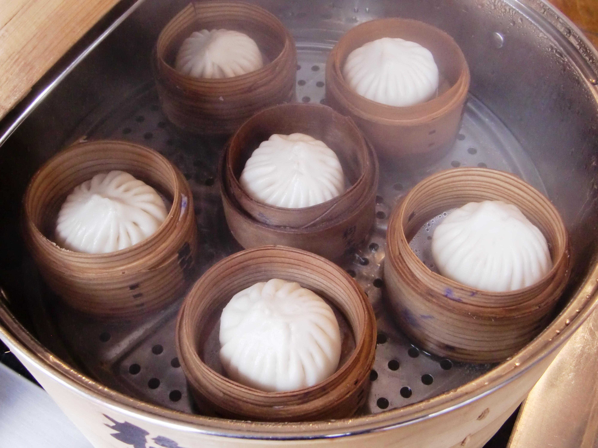
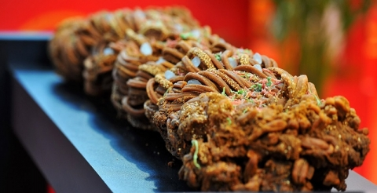
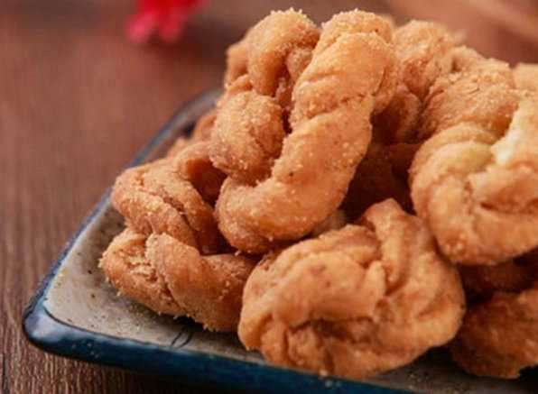

Goubuliu Baozi is Tianjin’s most famous snack, with a history of over 150 years. Legend says it was invented by a boy named “Goubuliu” (meaning “dog doesn’t care”)—as a child, he helped his mom make buns, and he was so focused on his work that he ignored his pet dog, earning the nickname. The buns are made with soft, fluffy dough and filled with minced pork mixed with broth (so each bite is juicy). They’re steamed in bamboo baskets, and the best ones have 18 pleats on the top (a sign of good craftsmanship).
Dough: Soft, slightly sweet, and fluffy—melts in your mouth.
Filling: Juicy minced pork (not greasy) with a savory broth; sometimes mixed with diced shrimp or bamboo shoots for extra flavor.
Overall: Warm, comforting, and satisfying—perfect for breakfast or a snack.
Original Goubuliu shop (Ancient Culture Street): 38 CNY/8 buns (classic pork), 48 CNY/8 buns (shrimp pork).
Mid-range restaurants: 25–35 CNY/8 buns.
Street stalls: 15–20 CNY/8 buns (simpler version, fewer pleats).

Erduoyan Fried Dough Twists (Erduoyan Mahua) are a crispy Tianjin specialty, named after “Erduoyan Street” (where they were first sold in the late 19th century). They’re made by twisting strips of dough (mixed with flour, eggs, and sugar) and frying them till golden. Traditional flavors include sesame, sugar, and five-spice, but modern versions add chocolate or matcha. They’re crunchy outside, slightly fluffy inside, and portable—many locals buy them as souvenirs.
Texture: Crunchy on the outside, light and airy inside (not dry).
Flavor: Sweet (sugar or sesame) with a hint of egg; five-spice version is savory-sweet, great with tea.
Overall: Addictive, bite-sized snacks—perfect for munching while exploring the city.
Traditional versions (sesame/sugar): 15–25 CNY/500g (local markets or Erduoyan Street shops).
Premium flavors (five-spice/chocolate): 25–35 CNY/500g.
Gift packs (for souvenirs): 40–60 CNY/1kg (vacuum-sealed, keeps fresh for 1 month).

While sweet mahua is well-known, Tianjin’s savory version is a local hidden gem—loved for its bold, umami flavor that pairs perfectly with hot tea or congee. Made with dough mixed with salt, pepper, and sometimes minced green onions or sesame seeds, it’s twisted and fried till crispy, then often sprinkled with extra five-spice powder or chili flakes. Unlike sweet mahua (often eaten as a snack), savory twists are sometimes served as a side dish with noodles or porridge—hearty enough to complement savory meals
Texture: Crispy, with a slight “snap” when you bite into it—never stale or dry.
Flavor: Salty with a kick of five-spice, hints of green onion (if added); not overpowering, so it balances well with other foods.
Overall: A savory alternative to sweet snacks—great for those who prefer less sugar.
Street stalls or local eateries: 12–20 CNY/500g.
Paired with meals (e.g., as a side with noodles): 5–8 CNY/small plate (enough for 1 person).
Bulk purchase (for home): 10–15 CNY/500g at wet markets (fresh daily).